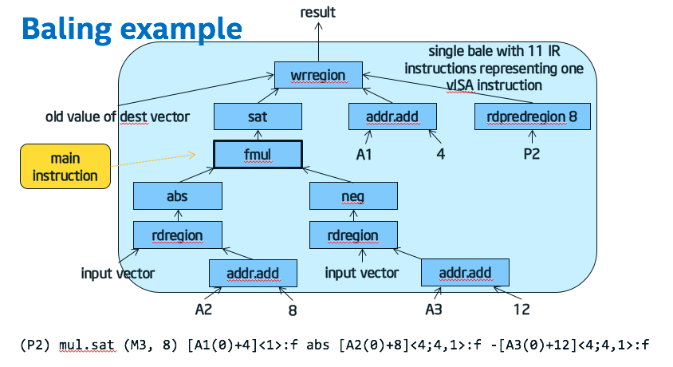

GenX backend design¶
Introduction¶
The GenX backend for LLVM targets Intel HD Graphics, and represents EU code in such a way that it represents the full functionality of an EU thread, such as region addressing and SIMD control flow.
For more introductory material on the GenX backend, see Introduction to the GenX backend.
This document does not cover the design of the Clang-based front end of the CM compiler. Assuming you are reading this in a cm-llvm source tree where you have built the documentation, see Internal documentation for CM.
LLVM intermediate representation of EU code¶
The LLVM IR that the GenX backend expects to see is documented in LLVM IR for the GenX backend.
Users of the GenX backend¶
Currently the only user of the GenX backend is the CM compiler (the cm-llvm project).
The GenX backend is designed to stand alone from the CM compiler, so it could be used in other projects that require its whole-EU-thread representation. See the section Whole thread representation in LLVM IR for the GenX backend.
Not using the LLVM target independent code generator¶

Most LLVM targets use the target independent code generator. It mostly uses a textual machine description that is compiled by tablegen as part of the build process.
Using that machine description, the target converts the LLVM IR into a DAG form, legalizes and instruction selects it, runs a pre-RA scheduler, and converts it into machine IR, which starts off as SSA, but is de-SSAd as part of the register allocation process.
Disadvantages of the target independent code generator¶
The target independent code generator has a number of problems:
- We get lots of problems with the assumption that the target is a real CPU with real hardregs, when in fact we are targeting vISA with an effectively infinite number of registers.
- Even if we were targeting Gen directly, rather than vISA, the target independent code generator would not cope with Gen’s almost byte addressable register file. Although it can cope with different size registers mapping to the same place, they have to be hierarchical (e.g. rax contains eax contains ax contains al and ah).
- In machine IR, an operand does not carry a type, only a register class. Instead the instruction implies the type (e.g. “add i32”). For the ALU ops, even though types are limited to a power of two number of elements limited to 32 bytes, we would have quite a few combinations, especially as GenX allows the source and destination to be different type and signedness. It is worse for one operand in a memory access or region access; such an operand can be any number of elements almost up to the entire register file size.
- The vector width legalization carried out on the DAG in the target independent code generator is nothing like what we want for region and operand legalization.
The alternative: use LLVM IR¶

The GenX backend does not use the target independent code generator. Instead it keeps the program in LLVM IR and operates on that, right up to the vISA writer at the end. It uses LLVM IR in conjunction with other on-the-side data structures, as is normal with LLVM passes. (For example, LLVM keeps the dominator tree as a separate on-the-side data structure.)
The GenX backend does have to jump through some hoops to use this approach:
- A single vISA instruction is represented in the LLVM IR by multiple instructions, with an on-the-side data structure, baling info, saying how the instructions are grouped together into bales.
- The LLVM IR continues to be SSA, even after the pass (GenXCoalescing) that effectively does the de-SSA. This works because GenXCoalescing inserts copies to implement the phi nodes, but in such a way that the phi nodes are still present. The on-the-side data structure describing liveness and how values are coalesced ensures that the operands and result of a particular phi node will be in the same register.
(Both IGC and Beignet avoid the target independent code generator too, but use the slightly different approach of having their own non-SSA IR after LLVM IR.)
Restricting the LLVM IR through the GenX backend¶
Although the GenX backend uses LLVM IR throughout, what can be represented becomes more and more restricted as the IR is fed through the passes, until, at the end, the GenXVisaFuncWriter pass is able to translate the LLVM IR (together with baling information and register allocation) trivially into vISA.
In the pass documentation below, an LLVM IR restriction is flagged like this: IR restriction:
Core LLVM modifications¶
This list of core LLVM modifications includes only the changes concerning the GenX backend and its intrinsic functions. There are further core LLVM modifications specific to the CM compiler listed in the CM compiler design document.
Constant folding, instruction simplification and instruction combining changes¶
In LLVM, constant folding is where an instruction has all constant operands, and uses of it are replaced by the computed constant result. Instruction simplification is where a tree of one or more instructions can be replaced by one of the operands or a constant. Instruction combining is where a tree of one or more instructions can be replaced by a new instruction.
GenX intrinsics participate in constant folding and instruction simplification but not in instruction combining.
lib/Analysis/ConstantFoldingGenX.cppis a new file that does constant folding on GenX intrinsics. A hook to call it has been added tolib/Analysis/ConstantFolding.cpp.lib/Analysis/InstructionSimplifyGenX.cppis a new file that does instruction simplification on GenX intrinsics. A hook to call it has been added tolib/Analysis/InstructionSimplify.cpp.lib/Analysis/ConstantFolding.cpphas an enhancement to fold a bitcast of a constant vector in the case that some elements are undef.lib/Analysis/InstructionSimplify.cpphas an enhancement to simplify a double bitcast to nothing at all where possible.lib/Analysis/InstructionSimplify.cpphas an enhancement to simplify(A & B) | (A & ~B)toA. This was used by the non-optimal implementation of SIMD control flow, before the optimal implementation using goto instructions was done.lib/Analysis/InstructionSimplify.cppcould already turnselect true, X, YintoXandselect false, X, YintoY. We have added an enhancement to make this work for a vector select when the condition is partly undef and otherwise true, or partly undef and otherwise false.lib/Analysis/InstCombineMulDivRem.cpphas an enhancement to change sdiv to ashr when the dividend is known to be non-negative and the divisor is a power of two. (There was already code for when the division is known to be exact.)lib/Analysis/InstCombine.cpphas a fix to disable add -> or transformations, as it stops the GenX backend being able to spot a constant add to an indirect region index. This change may be an obstacle to commoning up cm-llvm’s LLVM code base with any othert LLVM-using project such as IGC. You would need to revert this change and instead spot where an or can be turned back into an add in the GenX backend.lib/Analysis/InstCombineCasts.cpphas an enhancement to combinesitofp(zext(X))touitofp(X).lib/Analysis/InstructionSimplify.cppandlib/Analysis/InstCombineCompares.cpphave an enhancement to spot vector icmp of zext/sext from i1 with 0. When the icmp predicate is ne, the sequence can be turned into just the i1 input. When the icmp predicate is eq, the sequence can be turned into a not of the i1 input.
Other changes¶
- There are one- or two-line changes in various files to add the GenX backend. See
commit
2f92f3f5, also the addition ofinclude/llvm/IR/IntrinsicsGenX.tdin commite7fa4729. lib/Transforms/Scalar/IndVarSimplify.cpphas a change to disableSinkUnusedInvariants. This change may be an obstacle to commoning up cm-llvm’s LLVM code base with any other LLVM-using project such as IGC. You would need to check whether reverting this change increases spill in some tests, and, if so, do not revert until there is a better solution for moving and rematerializing code to reduce register pressure in the GenX backend.lib/IR/AsmWriter.cpphas an enhancement to add a comment with the source location when writing an Instruction in textual form, as happens in -print-after-all.include/llvm/IR/DiagnosticInfo.hhas a bugfix to #includeModule.h.- The new FunctionGroupPassManager is in
lib/Target/GenX/FunctionGroup.hin the GenX backend, but the addition of a new pass type with associated pass manager required a few one line changes in core LLVM files. See commit99bab565.
Non-pass classes¶
This section documents some GenX backend classes and abstractions that are not in themselves passes, but are used by the passes.
genx::AlignmentInfo : alignment information¶
AlignmentInfo is a cache of information on the alignment of instruction values in a function. It does not persist between passes.
A pass that needs alignment information constructs an AlignmentInfo at
the start of the pass, and then calls the get method each time it wants
alignment information for a particular instruction value. AlignmentInfo
calculates it if it is not already in its cache, which probably involves
also calculating the alignment of other instructions that the given one
depends on.
This cacheing and lazy calculation is done instead of having a separate analysis pass because alignment is needed for only a small subset of values in a function.
The alignment is returned as an Alignment object with three fields: ConstBits, if ConstBits is not 0x7fffffff, alignment is a known bit-pattern, otherwise LogAlign and ExtraBits (where 0 <= ExtraBits < (1 << LogAlign)), stating that the value is known to be A << LogAlign | ExtraBits for some A.
For a vector value, the alignment information is for element 0.
The calculation uses a worklist algorithm that can cope with phi nodes and loops. So, for example, a variable (used as an indirect region index) that starts at 10 then is incremented by 8 inside a loop is correctly calculated to be 8A+2 for some A.
GenXRegion : region information¶
An object of class GenXRegion describes the region parameters of a Gen region. It is a transient object, in that a pass constructs it as needed and then forgets it. It does not persist between passes, as the region parameters are fully described by the arguments to the rdregion and wrregion intrinsics.
The region parameters in a GenXRegion are:
- ElementBytes : number of bytes per element
- ElementTy : Type of element
- NumElements : total number of elements in the region (number of rows is thus NumElements/Width)
- VStride : vertical stride in elements
- Width : row width in elements
- Stride : horizontal stride in elements
- Offset : constant part of offset
- Indirect : variable index (nullptr for direct region, scalar value for single indirect, vector value for multi indirect)
- IndirectIdx : start index in vector indirect. This is always 0 when constructing a GenXRegion, but can be set to a non-zero value before calling a method to create a new rdregion/wrregion intrinsic
- Mask : mask (predicate) for wrregion, nullptr if none
- ParentWidth : the parent width value (a statement that no row crosses a boundary of a multiple of this number of elements)
There are the following constructors:
- Construct from a Type or Value, setting the GenXRegion to a region that covers the whole value.
- Construct from a rdregion/wrregion intrinsic, setting the GenXRegion to the region described by the intrinsic. This constructor also takes the BaleInfo as an argument, allowing a variable index that is a baled in constant add to be considered as a separate variable index and constant offset.
- Construct from a bitmap of which elements need to be in the region. This is used from GenXConstants when constructing a splat region when loading a constant in multiple stages.
GenXLegalization uses GenXRegion to determine whether a region is legal, and split it up if necessary. First it constructs a GenXRegion, then it has a loop to split it into legal regions. Each loop iteration calls:
- the getLegalSize method (see below) to determine the split size; then
- getSubregion to modify the GenXRegion for the split size; then
- one of the methods to create a new rdregion or wrregion intrinsic.
GenXRegion is not used to represent the region parameters in predicate regions, since they are much simpler. But GenXRegion does contain static methods to create rdpredregion etc intrinsics given the predicate region parameters.
GenXRegion::getLegalSize¶
The getLegalSize method is used by GenXLegalization and some other passes
to determine whether a region is legal, and if not how small a split is
required to make it legal.
It takes the GenXSubtarget as an argument, because it needs to know architecture-specific details, currently just whether a single GRF crossing is allowed in an indirect region.
It also takes either an AlignmentInfo object, or the actual alignment of the indirect index (if any). Knowing the alignment of the indirect index can help allow a larger legal region, and avoid needing to split into simd1.
GenXSubtarget : subtarget information¶
GenXSubtarget is the GenX-specific subclass of TargetSubtargetInfo. It takes features detected by the front end (what the Gen architecture is; what size SVM pointers are), and exposes flags to the rest of the GenX backend for various features (e.g. whether 64 bit operations are supported).
Where subtarget features are used is noted in the documentation of GenX backend passes.
The flags exposed to the rest of the GenX backend are as follows. Most of these are currently not used.
- isHSW - true if target is HSW
- isBDW - true if target is BDW
- isBDWplus - true if target is BDW or later
- isCHV - true if target is CHV
- isSKL - true if target is SKL
- isSKLplus - true if target is SKL or later
- isBXT - true if target is BXT
- isKBL - true if target is KBL
- isGLK - true if target is GLK
- isCNL - true if target is CNL
- isCNLplus - true if target is CNL or later
- isICL - true if target is ICL
- isICLLP - true if target is ICL LP
- dumpRegAlloc - true if we should dump Reg Alloc info
- svmptrIs32Bit - true if svmptr_t is 32 bit
- svmptrIs64Bit - true if svmptr_t is 64 bit
- hasLongLong - true if target supports long long
- disableJmpi - true if jmpi is disabled.
- disableVectorDecomposition - true if vector decomposition is disabled.
- warnCallable() - true if compiler only generate warning for callable in the middle
- hasIndirectGRFCrossing - true if target supports an indirect region crossing one GRF boundary
Pass documentation¶
The GenX backend runs the following passes on LLVM IR:
- BasicAliasAnalysis
- SROA
- LowerSwitch
- GenXCFSimplification
- CFGSimplification
- GenXReduceIntSize
- InstructionCombining
- GenXSimdCFConformance
- GenXPromotePredicate
- GenXLowering
- GenXRegionCollapsing
- EarlyCSE
- GenXPatternMatch
- GenXExtractVectorizer
- GenXRawSendRipper
- DeadCodeElimination
- GenXBaling
- GenXLegalization
- GenXDeadVectorRemoval
- DeadCodeElimination
- GenXPostLegalization
- GenXConstants
- GenXVectorDecomposer
- EarlyCSE
- LICM
- DeadCodeElimination
- BreakCriticalEdges
- FunctionGroup
- GenXModule
- GenXLiveness
- GenXRematerialization
- GenXCategory
- Late SIMD CF conformance pass
- CodeGen baling pass
- GenXUnbaling
- GenXDepressurizer
- GenXNumbering
- GenXLiveRanges
- GenXCoalescing
- GenXAddressCommoning
- GenXArgIndirection
- GenXTidyControlFlow
- GenXVisaRegAlloc
- GenXVisaFuncWriter
- GenXVisaWriter
BasicAliasAnalysis¶
This is a standard LLVM analysis pass to provide basic AliasAnalysis support.
SROA¶
This is a standard LLVM pass, used at this point in the GenX backend.
Normally all alloca variables have been
removed by now by earlier LLVM passes, unless -O0 was specified.
We run this pass here to cover that case.
IR restriction: alloca, load, store not supported after this pass.
LowerSwitch¶
This is a standard LLVM pass to lower a switch instruction to a chain of conditional branches.
IR restriction: switch not supported after this pass.
GenXCFSimplification¶
This is a function pass that simplifies CF as follows:
- Where a conditional branch on “not any(pred)” branches over a single basic block containing a small number of instructions, and all instructions are either predicated by pred or are used only in the same basic block, then change the branch to “branch never” so it gets removed later.
CFGSimplification¶
This is a standard LLVM pass, used at this point in the GenX backend.
GenXReduceIntSize¶
GenXReduceIntSize is a function pass that reduces the size of vector int values where it can.
The semantics of the source language usually involve an operator such as + promoting its operands before performing the calculation. Typically, the front end compiler generates IR for the promotion without bothering to work out if it is unnecessary, as it is easier to work out if it is unnecessary in a later LLVM pass.
For scalar operations, LLVM already contains passes to do this. But it does not seem to for vectors, possibly because OpenCL does not have C-like promotion rules for vectors. CM does have C-like promotion rules for vectors, so we need to cope with unnecessarily promoted operations.
Operation of the pass¶
First it does a backwards scan, spotting where an instruction can be converted to a smaller int size because its result is used in other instructions that only use the lower part of the value (trunc, or an “and” with e.g. 0xff). The modified instruction with a smaller int size then needs a trunc inserting for each operand. When the pass reaches the instruction that is the input to that new trunc, it may be able to modify that one too. Thus a reduced int size gets propagated backwards.
Then it does a forwards scan, spotting where an instruction can be converted to a smaller int size because the operands have only the lower part of the value set (zext/sext, or an “and” with e.g. 0xff). The modified instruction with a smaller int size then needs a ZExt/SExt inserting. Thus the reduced int size is propagated forwards.
InstructionCombining¶
This is a standard LLVM pass, used at this point in the GenX backend.
GenXSimdCFConformance¶
This pass checks that the use of SIMD control flow (llvm.genx.simdcf.goto and llvm.genx.simdcf.join) conforms to the rules required to allow us to generate actual goto and join instructions. If not, the intrinsics are lowered to code that implements the defined semantics for the intrinsics, but does not use SIMD CF instructions, so is usually less efficient.
It also makes certain transformations to make goto/join legal in terms of its position in the basic block. These can fail silently, in which case the conformance check will fail on the goto/join in question:
- A goto and its extractvalues must be at the end of the block. (Actually, if the !any result of the goto is used in a conditional branch at the end of the block, then the goto being baled into the branch means that it is treated as being at the end of the block anyway. The only reason we need to sink it here is to ensure that isGotoBlock works.)
- For a join label block (a block that is the JIP of other gotos/joins), a join must come at the start of the block.
- For a branching join block (one whose conditional branch condition is the !any result from a join), the join must be at the end of the block.
- For a block that has one join with both of the above true, we need to move all other code out of the block.
The pass is run twice: an “early SIMD CF conformance pass” (a module pass) just before GenXLowering, and a “late SIMD CF conformance pass” (a function group pass) just before second baling.
The early pass is the one that checks for conformance, and lowers the goto and join intrinsics if the code is not conformant. The conformance checks implement the rules listed in the documentation for the goto and join intrinsics.
Lowering a goto issues a “failed to optimize SIMD control flow” warning. No clue is given in the warning as to what caused the conformance failure, however you (a compiler developer) can find out (for a test case submitted by a compiler user) by turning on -debug and looking at the output from this pass.
The late pass checks again for conformance, but if the code is not conformant, it just errors. We could lower the gotos and joins there too, but it would be more fiddly as we would have to ensure that the code conforms with what is expected at that stage of compilation, and there is no further chance to optimize it there.
We are not expecting this error to happen.
Otherwise, the late pass sets the register category of the EM and RM values to “EM” and “RM”, so they do not get any register allocated.
Conformance rules¶
If the goto and join intrinsics are not used in a way that conforms to the rules, then they will still have the semantics in their spec, but this pass will lower at least some of them to equivalent but less efficient code.
The rules are:
Because the hardware has a single EM (execution mask) register, all EM values input to and generated by these intrinsics must not interfere with each other; that is, they must have disjoint live ranges. For the purposes of determining interference, if any EM value is a phi node with incoming constant all ones, then the constant all ones value is counted as being live from the start of the function and is not allowed to interfere with other EM values (although it can interfere with other such constant all ones values).
An EM value is allowed to be defined:
- as part of the struct returned by one of these intrinsics;
- by a phi node, as long as each incoming is either an EM value or a constant all ones;
- by an extractvalue extracting it from a struct containing an EM value;
- as a function argument, as long as an EM value is also returned by the function (perhaps as part of a struct);
- by an insertvalue as part of a return value struct;
- as the return value of a non-intrinsic call (perhaps as part of a struct), as long as there is also a call arg that is an EM value, and the called function has the corresponding function arg and return value as EM values;
An EM value is allowed to be used:
- as the OldEM input to one of these intrinsics;
- in a phi node, as long as the result of the phi node is an EM value;
- as the condition in a wrregion or select;
- as the input to a shufflevector whose effect is to slice part of the EM value starting at index 0, as long as the result of that slice is only used as the condition in a wrregion or select;
- as a call argument, as long as the corresponding function argument is an EM value, and the call has an EM return value;
- in a return (perhaps as part of a struct), as long as the function also has an argument that is an EM value.
For an EM value defined in a goto, or a join whose scalar BranchCond result is used in a conditional branch, or in an extractvalue out of the result of such a goto or join, the only use allowed in the same basic block as the goto/join is such an extractvalue.
The OldEM input to the two intrinsics must be either an EM value or constant all ones. In the latter case, and in the case of a constant incoming to an EM phi node, its live range is considered to reach back through all paths to the function entry for the purposes of rule (1).
Each join point has a web of RM (resume mask) values, linked as by rules (6) and (7). All RM values within one join point’s web must not interfere with each other; that is, they must have disjoint live ranges. For the purposes of determining interference, if an RM value is a phi node with incoming constant all zeros, then the constant all zeros value is counted as being live from the start of the function and is not allowed to interfere with other RM values for this join (although it can interfere with other such constant all zeros values).
An RM value is allowed to be defined:
- as part of the struct returned by
llvm.genx.simdcf.goto; - by a phi node, as long as each incoming is either an RM value or a constant all zeros.
- as part of the struct returned by
An RM value is allowed to be used:
- as the OldRM input to
llvm.genx.simdcf.goto; - as the RM input to
llvm.genx.simdcf.join, but only to one join in the whole web; - in a phi node, as long as the result of the phi node is an RM value.
- as the OldRM input to
The OldRM input to
llvm.genx.simdcf.goto, or the RM input tollvm.genx.simdcf.join, must be either an RM value, or constant all zeros. In the latter case, and in the case of a constant incoming to an RM phi node, its live range is considered to reach back through all paths to the function entry or to the web’sllvm.genx.simdcf.joinfor the purposes of rule (5).The BranchCond struct element of the result of
llvm.genx.simdcf.gotomust either be unused (unextracted), or, after being extractvalued, must have exactly one use, which is in a conditional branch terminating the same basic block. In the unused case, the basic block must end with an unconditional branch. (This is a goto that is immediately followed by a join.)The BranchCond struct element of the result of
llvm.genx.simdcf.joinmust either be unused (unextracted), or, after being extractvalued, have exactly one use, which is in a conditional branch terminating the same basic block.It must be possible to derive an ordering for the basic blocks in a function such that, in the conditional branch using the result of any goto or join, the “false” successor is fall-through and the “true” successor is to a join later on in the sequence. For a goto followed by an unconditional branch, the successor is fall-through _and_ the next join in sequence.
IR restriction: goto and join intrinsics must conform to these rules (since this pass lowers any that do not).
GenXPromotePredicate¶
GenXPromotePredicate is an optimization pass that promotes vector operations on predicates (n x i1) to operations on wider integer types (<n x i16>). This often reduces flag register pressure and improves code quality.
GenXLowering¶
GenXLowering is a function pass that lowers certain LLVM IR instructions that the rest of the GenX backend cannot deal with, or to implement peephole optimizations.
It also performs a few other tasks:
It implements add sinking for a variable index in a region/element access. This ensures that, in a sequence of operations to calculate a variable index for a region/element access, any add constant is sunk to the end, such that it can become a constant offset in an indirect operand, and give GenXAddressCommoning more chance to common up address calculations.
It splits struct values where possible, by splitting all struct phi nodes before running the main pass, then removing an extractvalue by using the corresponding insertvalue’s input instead. Any struct value used as an arg or return value still remains, and needs to be dealt with by register allocation.
It widens some byte vector operations to short vector.
Gen has restrictions on byte operands. The jitter copes with that, but sometimes it needs to do even-odd splitting, which can lead to suboptimal code if cmps and predicates are involved. Here we attempt to pick up the common cases by converting a byte operation to short.
Note that we might end up with the extends being baled into the instruction anyway, resulting in a byte operation in vISA.
Certain uses of shufflevector are lowered:
- a splat (copy of one element across a vector);
- a boolean slice (extract of a subvector) becomes rdpredregion;
- a boolean unslice (insert subvector) becomes wrpredregion.
Other uses of shufflevector are not expected and cause an assertion.
A Trunc is lowered to a bitcast then a region/element read with a stride. GenXCoalescing will coalesce the bitcast, and possibly bale in the region read, so this will hopefully save an instruction or two.
Certain floating point comparison instructions are lowered.
IR restriction: LLVM IR instructions not supported after this pass:
- shufflevector
- insertelement
- extractelement
- trunc
- zext/sext/uitofp from (vector of) i1
- select on vector of i1
llvm.uadd.with.overflow(the other overflowing arithmetic intrinsics are not allowed by the GenX backend anyway.)
IR restriction: No simd16 gather4_typed/scatter4_typed – they have been split into 2x simd8 operations.
IR restriction: rdpredregion intrinsic (which is generated by this pass from certain cases of shufflevector, and represents a use of part of a predicate) can only be used in select, wrregion, wrpredpredregion.
IR restriction: wrpredregion intrinsic (which is generated by this pass from certain cases of shufflevector, and represents the write of part of a predicate) must have a compare as its “new value” input.
IR restriction: No phi node of struct type after this pass. This is only a general rule; subsequent passes have been known to reintroduce them so GenXLiveness has another go at splitting them up.
GenXRegionCollapsing¶
GenX region collapsing pass is function pass that collapses nested read regions or nested write regions.
Nested region accesses can occur in two ways (or a mixture of both):
- The front end compiler deliberately generates nested region access. The CM compiler does this for a matrix select, generating a region access for the rows and another one for the columns, safe in the knowledge that this pass will combine them where it can.
- Two region accesses in different source code constructs (e.g. two select() calls, either in the same or different source statements).
The combineRegions() function is what makes the decisions on whether two regions can be collapsed, depending on whether they are 1D or 2D, how the rows of one fit in the rows of the other, whether each is indirect, etc.
This pass makes an effort to combine two region accesses even if there are multiple bitcasts (from CM format()) or up to one SExt/ZExt (from a cast) in between.
EarlyCSE¶
This is a standard LLVM pass, run at this point in the GenX backend. It commons up common subexpressions, but only in the case that two common subexpressions are related by one dominating the other.
GenXPatternMatch¶
This pass performs a small number of GenX-specific peephole optimizations.
It is named pattern match with the idea that it is analogous to the pattern matching pass in IGC. However IGC’s pattern matching is more extensive, and I believe some of its functionality is covered by GenXBaling in the GenX backend.
Turns fp and integer mul+add into mad, if it decides it is profitable.
For an integer mul+add, the pass looks at the inputs after accounting for extends that will get baled into the operation in the GenX backend, or folded into the instruction in the finalizer, and it uses mad only if both inputs are short or byte. Our experience on HSW was that using int mad where the inputs are actually 32 bit ints is counterproductive because of the way that the finalizer has to implement it using the hardware’s 32x16 multiply.
However, this criterion could probably be looser on any arch that has a 32x32 multiply (BDW+, but excluding some later LP variants). This is something to investigate.
To implement this, the pass would need to use GenXSubtarget, and there would need to be a has32x32Multiply flag in GenXSubtarget.
Turns cmp+sel into min/max if possible.
Flips a boolean not if profitable.
Cleanup predicate region reads if possible.
visitFDiv : reduce fdiv strength.
If fast-math is present, perform the following transforms:
(fdiv x, y) -> (fmul x0, (fdiv 1., x1)) (fdiv 1., x) -> (rcp x) (fdiv 1., (sqrt x)) -> (rsqrt x)
Otherwise, try to reduce fdiv with constant divisor to fmul if the reciprocal is exact.
GenXExtractVectorizer¶
GenX extract vectorizer pass is stage 1 of the histogram optimization: if there are multiple scalar rdregions from the same vector, all subject to the same binary operator with constant rhs or the same trunc/zext/sext, then they are combined into a vector version of the binary operator or trunc/zext/sext, with scalar rdregions from the result of that. This is designed to handle any trunc/zext/sext then scale of the index in the histogram optimization, although it does also apply in a few other cases.
GenXRawSendRipper¶
This pass tears down a series of raw send chained through the old value operand when it’s safe.
DeadCodeElimination¶
This is a standard LLVM pass, run at this point in the GenX backend. It removes code that has been made dead by other passes.
GenXBaling¶
GenX instruction baling is the process of determining which LLVM instructions can be combined into a single vISA instruction. Such a group of LLVM instructions is known as a bale. A bale typically has a main instruction and then optionally modifiers and region instructions on the sources and the destination of the main instruction. However it is possible to have a bale with no main instruction, for example just a rdregion, a modifier and a wrregion.
Bale example¶
This example shows a bale that is pretty much as complicated as you can get in a single bale. Each small blue box is an LLVM IR instruction, with arrows showing how each one is used. Other than the bale head instruction at the top, an instruction in a bale has only one use, which is within the bale.
The baling pass¶
GenX instruction baling happens in two parts:
The GenXBaling pass sets up a map to give each Instruction a BaleInfo, which contains a field giving the role the instruction plays in its enclosing bale (main instruction, rdregion, etc), and a bit vector where a bit is set if the corresponding operand of the instruction is another instruction that is baled in (part of the same bale).
GenXBaling is in fact two slightly different passes run at two different times:
- The GenXFuncBaling pass (a FunctionPass) runs before GenXLegalization, which uses it but invalidates it as it changes the code. This is known as first baling.
- The GenXGroupBaling pass (a FunctionGroupPass) runs after GenXLiveness. From GenXLiveness, baling information remains valid through to GenXVisaFunctionWriter, since any code changes made (such as adding copies where coalescing fails) either do not invalidate the analysis, or the pass making the change also updates the baling analysis.
The GenXBaling pass also detects where an instruction is baled in to another, but the instruction has other uses too. In this case it clones the instruction. Thus we end up with any baled in instruction having only one use (with an exception for goto/join – see below).
Thus the GenXBaling pass is not a pure analysis, as it can modify the code.
Using the map set up by the GenXBaling analysis, several functions are provided for use by other passes:
- getBaleInfo()/setBaleInfo() allow another pass to directly inspect and modify
the baling info for an instruction. The BaleInfo for an instruction gives:
- Type, the role of the instruction in the bale (e.g. it is a rdregion);
- a bitmap of which operands are baled into it, together with methods for getting and setting the bit for a particular operand.
- getBaleParent() returns the instruction that the given instruction is baled into, if any
- isBaled() says whether the given instruction is baled into anything
- getBaleHead() returns the instruction at the head of the bale that the given instruction is baled into, which is the same as the given instruction if it is not baled into anything.
- buildBale() takes a head instruction (one for which isBaled is false) and fills out a Bale struct with a vector of BaleInst structs for all the instructions in the bale, where each BaleInst contains a pointer to the instruction and its BaleInfo struct (as in getBaleInfo()/setBaleInfo()).
- getBaleInfo()/setBaleInfo() allow another pass to directly inspect and modify
the baling info for an instruction. The BaleInfo for an instruction gives:
Criteria for baling¶
GenXBaling implements the criteria for baling, i.e. when different LLVM IR instructions can be combined into the same vISA instruction:
- A rdregion with a variable index can bale in an add constant (where the
constant is splatted if vector) that generates the index. In second baling,
the constant add is in fact a
llvm.genx.add.addrintrinsic, because that is what GenXCategory converted it to. - GenXBaling is where an instruction gets recognized as a modifier, for example
subtract from 0 is a negate modifier. The instruction is left as it is, and
its modifier equivalent (e.g.
BaleInfo::NEGMOD) is set up in the instruction’s BaleInfo. - SExt/ZExt are also treated as modifiers, although not always balable. See below.
- A modifier can bale in an rdregion.
- A modifier can bale in another modifier in some circumstances.
- In particular, SExt/ZExt normally cannot bale in another modifier, but they
are allowed to bale in an abs modifier as a bodge to fix a problem where
the LLVM IR generated for
cm_absdoes not properly represent its semantics. Seedc93b907 GenXBaling: bodge to work around cm_abs problems. - A main instruction can bale a modifier or rdregion into each operand in some
circumstances:
- Some ALU intrinsics have region requirements, e.g. oword aligned, contiguous. GenXBaling enforces those requirements by only baling in an rdregion that satifies them, but only in second baling. First baling does the baling anyway, as we want GenXLegalization to consider the instructions as one bale as it might legalize in a way that makes the region legal for the instruction.
- Baling an SExt/ZExt in is how we represent a vISA instruction such as
addwith a result type different to operand type. The two operands can have different types too in Gen, but vISA insists they are the same (if not constant). So:- In first baling, we allow SExt/ZExt from different types to be baled in to the two operands. This tends to make GenXLegalization legalize them to the same vector width as the main instruction.
- In second baling, we do not allow SExt/ZExt from different types (or one SExt/ZExt where the other operand does not have one) to be baled in. This yields a legal vISA instruction, but having done (1) also allows the finalizer to fold the extend into the instruction.
- A raw operand (of a send or shared function intrinsic) has its own restrictions – it can bale in a rdregion, but the region has to be contiguous and GRF aligned.
- There is special case code for where send or a shared function intrinsic
has a
TWOADDRraw operand, one that does not appear as a vISA operand in its own right but is implicitly the same register as the result. The twoaddr raw operand can bale in a rdregion (with region contiguous and GRF aligned) as long as the result can be baled into a wrregion with the same region parameters and the same “old value” input. This represents where a send or shared function intrinsic does a predicated partial write, and the place it does the partial write to is a region in a vISA register.
llvm.genx.satrepresents floating point saturation, and is a modifier that is different to the other modifiers because it is not a source modifier. A saturate can bale in a main instruction or modifier or rdregion.- A wrregion can do the following baling:
- It can bale a main instruction (subject to region restrictions in second baling), a saturate, a modifier or a rdregion into its “new value” input.
- Like rdregion, it can bale a constant add into its index operand.
- Anything with a predicate (wrregion, select, send, all/any, some shared function intrinsics) can bale in a predicate not, and any of those things, including the not, can bale in an rdpredregion to represent using e.g. an M3 flag to use only part of the predicate. However predicate baling is not done in first baling, as GenXLegalization does not want to consider the operations together.
- Anything with a scalar i1 condition (select, br) can bale in an all/any.
Baling of goto/join into br¶
The goto and join intrinsics have multiple return values, returned in a single struct. One of the return values is the scalar i1 !any value that is then used in a conditional branch.
In second baling, we want the goto/join, the extractvalue of the !any result, and the conditional branch to be baled together, so we can generate a single goto/join instruction.
However the struct result of the goto/join has other uses, the extractvalues of the other results. Thus, in this special case, we have a bale where the goto/join instruction inside the bale has uses other than the inside-bale use. This needs special case code to handle in GenXBaling.
In the future it may be worth considering a generalization of this idea of a bale that is not a strict tree of instructions, so that we can use LLVM IR to model Gen instructions with a general result and a flag result. Currently we cannot do that, which means:
- we cannot represent addc properly;
- we cannot represent any combined arithmetic-and-set-flags instruction, although that is not too much of a problem as the jitter derives such an instruction by folding a cmp into an arithmetic instruction.
Alignment requirements¶
An additional function of the second baling pass is that, when it bales a raw result intrinsic into a wrregion, it marks the wrregion’s LiveRange as needing to be 32 aligned, and when it bales a rdregion into a raw operand in an intrinsic, it marks the rdregion’s input’s LiveRange as needing to be 32 aligned. GenXCategory sets most alignment requirements, but baling in a rdregion or baling a main instruction into a wrregion imposes alignment requirements on the vISA register that the region is read from or written to.
GenXLegalization¶
GenXLegalization is a function pass that splits vector instructions up to make execution widths legal, and to ensure that the GRF crossing rules are satisfied.
This pass makes the LLVM IR closer to legal vISA by splitting up any instruction that has an illegal vector width (too big or non power of two) or an illegal region (illegal vstride/width/stride or illegal GRF crossing).
IR restriction: After this pass, LLVM IR represents vISA instructions with legal execution width and region parameters, and with any particular instruction’s region restrictions adhered to.
The pass uses the instruction baling information to tell which regions an instruction has. Splitting an instruction and its regions needs to be done with reference to all the regions at the same time, as they may need splitting at different points.
For general values, an illegal width instruction is split by creating narrower instructions, each of which uses a rdregion to extract the subregion for each source operand, and then uses a wrregion to insert the resulting subregion into the original destination value. The original illegal width values survive, and that is OK because a vISA register can have any vector width.
The pass uses the hasIndirectGRFCrossing feature from GenXSubtarget when calculating whether a region is legal, or how a region needs to be split, in the case that the region is indirect.
The legalization pass considers a bale of instructions as a separate entity which can be split without reference to other bales. This works because the overhead of splitting, which is an extra rdregion per operand and an extra wrregion on the result, is pretty much free in that these extra region accesses are baled in to the split instruction.
There are some cases where we decide we need to unbale an instruction, i.e. remove it (or rather the subtree of instructions in the bale rooted at it) from the bale, and then re-start the analysis for the bale. This happens when there are two conflicting requirements in the bale, for example a main instruction that needs at least simd4 but a rdregion that can only manage simd2.
The pass scans backwards through the code, which makes this unbaling a bit easier. An unbaled instruction will be encountered again a bit later, and be processed as its own bale.
If a source operand being split is already an rdregion, then that rdregion is split, so the new split rdregions read from the original rdregion’s input.
Similarly, if the bale is already headed by an wrregion, it is replaced by the new split wrregions used to join the splits back together.
BitCast is not split in this pass. A non-category-converting BitCast is always coalesced in GenXCoalescing, so never generates actual code. Thus it does not matter if it has an illegal size.
Predicate legalization¶
Predicates (vector of i1) are more complex. A general vISA value can be any vector width, but a predicate can only be a power of two up to 32. Thus the actual predicate values need to be split, not just the reads from and writes to the values.
Furthermore, although it is possible to read and write a region within a predicate, using H1/H2/Q1..Q4 flags, there are restrictions: the start offset must be 8 aligned (4 aligned for a select or cmp with 64-bit operands), and the size must be no more than the misalignment of the start offset (e.g. for a start offset of 8, the size can be 8 but not 16).
So this pass splits an arbitrary size predicate value (including predicate phi nodes) into as many as possible 32 bit parts, then descending power of two parts. For example, a predicate of size 37 is split into 32,4,1.
Then, within each part, a read or write of the predicate can be further split as long as it fits the restrictions above, e.g. a 32 bit part can be read/written in 8 or 16 bit subregions.
This is achieved in two steps:
- Predicates take part in the main code of GenXLegalization. When deciding how to split a read or write of a predicate, we determine how the predicate value will be split into parts (e.g. the 37 split into 32,4,1 example above), then decides how a part could be subregioned if necessary (e.g. the 32 could have a 16 aligned 16 bit region, or an 8 aligned 8 bit region). As well as a maximum, this usually gives a minimum size region. If the rest of the bale cannot achieve that minimum size, then we unbale to avoid the problem and restart the analysis of the bale.
- Then, fixIllegalPredicates() actually divides the illegally sized predicate values, including phi nodes. The splitting in the main part of GenXLegalization ensures that no read or write of a predicate value crosses a part boundary, so it is straightforward to split the values into those parts.
This is complicated by the case that the IR before legalization has an rdpredregion. This typically happens when a CM select has odd size operands but an i32 mask. Clang codegen bitcasts the i32 mask to v32i1, then does a shufflevector to extract the correct size predicate. GenXLowering turns the shufflevector into rdpredregion. The main code in GenXLegalization splits the rdpredregion into several rdpredregions.
In that case, we cannot guarantee that fixIllegalPredicates will find legal rdpredregions. For example, suppose the original rdpredregion has a v32i1 as input, and v13i1 as result. It is determined that the 13 bit predicate will be split into 8,4,1 parts. The main GenXLegalization code will generate an rdpredregion from the 32 bit predicate for each part of the 13 bit predicate. However, the rdpredregion for the 1 bit part is illegal, because its start offset is not 8 aligned.
We currently do not cope with that (it will probably assert somewhere). If we do find a need to cope with it, then the illegal rdpredregion will need to be lowered to bit twiddling code.
Other tasks of GenXLegalization¶
An additional task of this pass is to lower an any/all intrinsic that is used anywhere other than as the predicate of a scalar wrregion by inserting such a scalar wrregion with a byte 0/1 result and then a compare of that to give an i1.
A further task of this pass is to lower any predicated wrregion where the value to write is a vector wider than 1 but the predicate is a scalar i1 (other than the value 1, which means unpredicated). It inserts code to splat the scalar i1 predicate to v16i1 or v32i1. This is really part of lowering, but we need to do it here because in GenXLowering the value to write might be wider than 32.
An extra optimization performed in this pass is to transform a move (that is, a lone wrregion or lone rdregion or a rdregion+wrregion baled together) with a byte element type into the equivalent short or int move. This saves the jitter having to split the byte move into even and odd halves. This optimization needs to be done when baling info is available, so legalization is a handy place to put it.
GenXDeadVectorRemoval¶
GenXDeadVectorRemoval is an aggressive dead code removal pass that analyzes individual elements of a vector rather than whole values.
As a result of this analysis, the pass can then make the two following modifications to the code:
- If all vector elements of an instruction result turn out to be unused, the instruction is removed. In fact, this pass just sets all its uses to undef, relying on the subsequent dead code removal pass to actually remove it.
- If all vector elements of the “old value” input (even a constant) of a
wrregion turn out to be unused, then that input is set to undef. This
covers further cases over (1) above:
- the “old value” input is constant, and we want to turn it into undef to save a useless constant load;
- the “old value” input is an instruction that does have elements used elsewhere, and we want to turn it into undef to detach the two webs of defs and uses from each other to reduce register pressure in between.
DeadCodeElimination¶
This is a standard LLVM pass, run at this point in the GenX backend. It removes code that has been made dead by other passes.
GenXPostLegalization¶
GenXPostLegalization is a function pass run after legalization with the following purposes:
- It inserts a constant load for most constants that are not representable as a constant operand in GenX code. See the GenXConstants section below.
- It calls GenXVectorDecomposer to perform vector decomposition. See the GenXVectorDecomposer section below.
Both of these things are done here because the results of them (constant loads and decomposed vector operations) may benefit from CSE run after this pass.
GenXConstants¶
GenXConstants is not in itself a pass. It contains utility functions and a class used by other passes for constant loading.
loadNonSimpleConstants¶
The GenXPostLegalization pass calls loadNonSimpleConstants to insert a load for any operand that is a non-simple constant. (A non-simple constant is one that is too big or an invalid value for a constant operand.)
It is called in two places:
- in the GenXPostLegalization pass, run after legalization but before CSE, so CSE has an opportunity to common up loaded non-simple constants;
- later on in GenXCategory, to mop up non-simple constant operands created by CSE’s constant propagation.
This does not insert a load if the constant is “big simple” (that is, it is illegally wide but each legalized part of it is simple) and it is used in the “old value” operand of a wrregion, or as a call arg. Inserting a load of such a constant here would allow the load to be CSEd, which would be counter productive as some of the uses would not be kill uses and so coalescing would fail there.
Phi incoming constants are not loaded here; they are loaded in loadPhiConstants called from GenXCategory. Phi constant loads do not need to participate in CSE as loadPhiConstants has its own commoning up tailored for phi nodes.
loadConstants¶
This is called from GenXCategory. It inserts a load for each constant operand that is not allowed to be constant, but remains after loadNonSimpleConstants.
Phi incoming constants are not loaded here; they are loaded in loadPhiConstants called from GenXCategory.
loadPhiConstants¶
This is called from GenXCategory, and it inserts loads for constant phi incomings, commoning up when possible and sensible.
Commoning up (inserting one load for multiple phi incomings with the same constant, across one or more phi nodes) proceeds as follows:
Firstly, we divide the phi nodes into _webs_, where each web is the maximal set of phi nodes that are related through phi nodes and two address instructions, so will be coalesced later on in the flow.
Secondly, for a single web, we look for multiple uses of the same constant. Such a constant has a load instruction inserted just once, at the end of the nearest common dominator of all the corresponding incoming blocks.
If that insert point is in an empty split critical edge block, we instead insert in the block above that, in the hope that the split critical edge block can be removed later.
ConstantLoader¶
ConstantLoader is a class that represents a constant and information on how to load it. This is where analysis happens of whether it is a legal packed vector, or whether it needs multiple instructions to load it. It then has methods to insert the code to load the constant.
GenXVectorDecomposer¶
GenXVectorDecomposer is not a pass; instead it is a class is called by by the GenXPostLegalization pass to perform vector decomposition.
For a vector written by wrregion and read by rdregion, it finds the way that the vector can be divided into parts, with each part a range of one or more GRFs, such that no rdregion or wrregion crosses a part boundary. Then it decomposes the vector into those parts. A rdregion/wrregion that reads/writes a whole part can be removed completely; a rdregion/wrregion that reads/writes only some of the part is replaced to read/write just the applicable part.
In fact it does all this for a web of vectors linked by wrregion, phi nodes and bitcasts.
The idea is that having lots of small vectors instead of one big vector reduces register fragmentation in the finalizer’s register allocator.
There is an option -limit-genx-vector-decomposer=N to aid debugging the code changes made by the vector decomposer.
EarlyCSE¶
This is a standard LLVM pass, run at this point in the GenX backend. It commons up common subexpressions, but only in the case that two common subexpressions are related by one dominating the other.
DeadCodeElimination¶
This is a standard LLVM pass, run at this point in the GenX backend. It removes code that has been made dead by other passes.
BreakCriticalEdges¶
In the control flow graph, a critical edge is one from a basic block with multiple successors (a conditional branch) to a basic block with multiple predecessors.
We use this standard LLVM pass to split such edges, to ensure that GenXCoalescing has somewhere to insert a phi copy if needed.
FunctionGroup¶
FunctionGroup is a generic mechanism for maintaining a group of Functions.
FunctionGroupAnalysis is a Module analysis that maintains all the FunctionGroups in the Module. It is up to some other pass to use FunctionGroupAnalysis to create and populate the FunctionGroups, and thus attach some semantics to what a FunctionGroup represents.
FunctionGroupPass is a type of pass (with associated pass manager) that runs a pass instance per FunctionGroup.
This file is currently in lib/Target/GenX, as that is the only place it is used. It could be moved somewhere more general.
GenXModule¶
GenXModule is a module pass whose purpose is to store information about the module being written, such as the built kernels and functions.
A vISA kernel or function can call a subroutine, which can then call further subroutines. All called subroutines are considered part of the kernel or function, which means that a subroutine used by two different kernels needs to have a copy in each. The two copies may be treated differently by the backend passes, so there does actually need to be two copies of the subroutine in the LLVM IR in the backend, one called by each kernel.
The GenXModule pass performs any necessary copying of subroutines, and populates FunctionGroupAnalysis such that each kernel and its subroutines make one FunctionGroup.
Subsequent passes are mostly FunctionGroupPasses, so they process one FunctionGroup at a time.
GenXModule is also an analysis, preserved through subsequent passes to GenXVisaWriter at the end, that is used to store each written vISA kernel.
IR restriction: After this pass, the lead function in a FunctionGroup is a kernel (or function in the vISA sense), and other functions in the same FunctionGroup are its subroutines. A (non-intrinsic) call must be to a function in the same FunctionGroup, and not the lead function.
GenXLiveness¶
GenXLiveness is an analysis that contains the liveness information for the values in the code. Unlike the usual LLVM liveness analysis, the values are in LLVM IR rather than machine IR.
This GenXLiveness pass is a container for the data structures required for liveness analysis, plus methods to perform the analysis. The pass itself does nothing; later passes manipulate it:
- GenXCategory creates a LiveRange and sets the category on it for each value.
- GenXLiveRanges calls GenXLiveness to set up the LiveRange for each value that needs one (a non-baled instruction or a function argument), and erases the LiveRange for a value that does not need one (a baled in instruction).
GenXLiveness is a FunctionGroupPass, because we want to share liveness information between all the Functions in a FunctionGroup (i.e. between a GenX kernel/function and its subroutines). Any pass that uses GenXLiveness, which is almost all passes that run after it, must itself be a FunctionGroupPass.
Here is what a LiveRange might look like if you dump() it in the debugger, or see it as part of the liveness info in a -print-after-all:
add12.split48172:[145,199){general,align32}
add12.split48172is the Value attached to the LiveRange. As outlined below, a LiveRange actually has SimpleValues rather than Values; if the attached SimpleValue had been an element of a struct rather than a scalar value in its own right, the name would have had # then the flattened index appended.- A LiveRange can have more than one value attached after GenXCoalescing. This would be shown by multiple comma-separated names.
[145,199)is the segment in which the LiveRange is live. A LiveRange can have multiple segments. This one is a normal (strong) segment; a weak one has the start number prefixed with ‘w’ and a phicpy one has the start number prefixed with ‘ph’.generalis the register category of the LiveRange.align32shows that the LiveRange has been marked as needing to be 32 byte (i.e. GRF) aligned.- If the LiveRange was a kernel argument, its allocated offset would have been shown with the word ‘offset’.
SimpleValue¶
Liveness information deals with SimpleValues rather than Values. SimpleValue (a GenX backend specific class) is the entity that can have a live range attached and a register allocated. A SimpleValue is either a non-struct Value, or a non-struct element of a struct Value (where the struct can contain nested structs).
A SimpleValue is represented by a pair:
- a Value *
- a flattened index for a non-struct element of a struct, otherwise 0
Having a flattened index (as generated by IndexFlattener::flatten()) allows us to encode an element in multiply nested structs with a single index.
The idea of SimpleValue is that, where the LLVM IR contains a struct value, which is unavoidable when a function has multiple return values, we want to allocate a register to each non-struct element, not the whole struct.
Segments¶
A live range consists of one or more non-overlapping segments, where each segment has a start (inclusive) and end (exclusive) instruction number, and a strength, which is strong (normal), weak (see below) or phicpy (see below). Two segments cannot be abutting if they have the same strength. Later passes can interrogate this information to find out whether two live ranges interfere, and can modify it by coalescing (merging) two live ranges. After coalescing, multiple SimpleValues share the same live range.
The numbering of instructions is handled in GenXNumbering.
Weak liveness¶
A live range that extends over a call has the entire range of the called subroutine, and any subroutines it can call, added to it. This makes that live range interfere with any live range inside the subroutine, and thus stops them using the same register.
However, because a subroutine has a single range in instruction numbering, rather than one range per call site, this scheme means that two values A and B that are live over two different call sites of the same subroutine both include the subroutine’s range, and thus look like they interfere. This could stop A and B being coalesced, and thus add extra code and register pressure.
To fix this, we have the concept of weak liveness. The values A and B are only weakly live inside the subroutine. Two values are considered to interfere only if there is some point where both are live, and at least one of them is not weakly live at that point.
Thus, in our A and B example, A and B each interferes with any value inside the subroutine, but not with each other.
Phicpy liveness¶
A phi node has a short segment of liveness (a phicpy segment) at the end of each of its incoming blocks, from the phi copy insertion point up to the end of the block. The use of the incoming value in the phi node is counted as being at that phi copy insertion point.
Normally, we split critical edges, so an incoming block to a phi node has only the one successor, and the use of the incoming value at the phi copy insertion point is a kill use. Often, the phi node and the incoming can be coalesced, unless there is some interference elsewhere due to other values previously coalesced into the two live ranges.
However, in one case (a goto/join branching to a join), we cannot split the critical edge. Thus the phi copy insertion point is before the conditional branch in a block with two successors, and the incoming value is likely to be used in the other successor too. Then, there is interference between the phi node and the incoming value, even though they could be coalesced.
To avoid this problem, each phicpy segment in a live range is marked as such. A phicpy segment is valid only if there is no segment abutting it before; if there is an abutting before segment, the coalescing code turns it into a normal strong segment and merges the two together.
Then, interference between two live ranges LR1 and LR2 is ignored if:
- the interference arises between a phicpy segment in LR1 and a normal (strong) segment in LR2; and
- the start of the phicpy segment is the phi copy insertion point where the phi node is in LR1 and the incoming value is in LR2.
This then allows the incoming value and the phi node to be coalesced, even if the incoming value is also used in the branch’s other successor.
GenXRematerialization¶
This pass performs rematerialization to reduce register pressure.
GenXCategory¶
This pass performs five functions:
It splits any struct phi into a phi for each element of the struct. This is done in GenXLowering, but a subsequent pass can re-insert a struct phi so this pass mops those up.
It resolves each overlapping circular phi value.
LLVM IR does not attach any importance to the order of phi nodes in any particular basic block. At the head of a loop, a phi incoming can also be a phi definition in the same block, and they could be in either order.
However, once we start constructing live ranges in the GenX backend, we attach importance to the order of the phi nodes, so we need to resolve any such overlapping circular phi value. Currently we do this by inserting a copy (actually a bitcast) just after the phi nodes in that basic block. A future enhancement would be to try and re-order the phi nodes, and only fall back to copy insertion if there is circularity and it is impossible to find a correct order, for example when the loop body swaps two variables over.
It inserts a load for any operand that is constant but not allowed to be. It also catches any case where constant propagation in EarlyCSE has caused a non-simple constant to be propagated into the instruction. See the GenXConstants section above.
It determines the register category and increased alignment requirement (e.g. use as a raw operand) of each value, and stores it by creating a LiveRange for the value and storing it there. At this stage the LiveRange does not contain any other information; GenXLiveRanges populates it further (or erases it if the value turns out to be baled in).
It inserts instructions as required to convert from one register category to another, where a value has its def and uses not all requiring the same category.
All this pass inserts is a llvm.genx.convert intrinsic. It does not record what the categories are. This information is recalculated in GenXLiveness.
The reason for inserting the convert intrinsic calls here, before the final run of GenXBaling before GenXLiveRanges, is that we want GenXBaling to spot when a convert intrinsic can be baled with rdregion or wrregion.
For one value (function argument or instruction), the pass looks at the categories required for the defintion and each use. If there is no address conversion involved, then it inserts a single conversion if possible (all uses are the same category), otherwise it inserts a conversion for each use that requires one.
IR restriction: After this pass, a value must have its def and all uses requiring the same register category.
Address conversion¶
An address conversion is treated slightly differently.
A rdregion/wrregion representing an indirect region has a variable index.
This index is actually an index, whereas the vISA we need to generate for
it uses an address register that has been set up with an add_addr
instruction from the index and the base register.
This pass inserts an llvm.genx.convert.addr intrinsic, with zero offset,
to represent the conversion from index to address register. However, the
intrinsic has no way of representing the base register. Instead, the base
register is implicitly the “old value” input of the rdregion/wrregion where
the address is used.
The same index may well be used in multiple rdregions and wrregions,
especially after LLVM’s CSE. But at this stage we have no idea whether
these multiple rdregions/wrregions will have the same base register, so
we must assume not and insert a separate llvm.genx.convert.addr
for each rdregion/wrregion use of the index.
These multiple address conversions of the same index are commoned up where possible later on in GenXAddressCommoning. That pass runs after GenXCoalescing, so it can tell whether two address conversions of the same index also have the same base register because the “old value” inputs of the regions have been coalesced together.
Where an index used in an indirect region is a constant add, this pass
inserts the llvm.genx.convert.addr before that, and turns the constant
add into llvm.genx.add.addr. The latter can be baled into rdregion
or wrregion, representing a constant offset in the indirect region.
Only one llvm.genx.add.addr is allowed between the
llvm.genx.convert.addr and the use in a rdregion/wrregion.
However this pass does not check whether the offset is in range (although GenXBaling does check that before deciding to bale it in). The GenXAddressCommoning pass sorts that out.
IR restriction: After this pass, a variable index in a rdregion/wrregion
must be the result of llvm.genx.convert.addr or llvm.genx.add.addr.
Operand 0 of llvm.genx.add.addr must be the result of
llvm.genx.convert.addr.
IR restriction: After this pass, up to GenXAddressCommoning, the result
of llvm.genx.convert.addr must have a single use in either a
llvm.genx.add.addr or as the index in rdregion/wrregion. The result
of llvm.genx.add.addr must have a single use as the index in
rdregion/wrregion.
Late SIMD CF conformance pass¶
This is the same pass as GenXSimdCFConformance above, but run in a slightly different way. See above.
IR restriction: After this pass, the EM values must have EM register category. The RM values must have RM register category. The !any result of a goto/join must have NONE register category.
CodeGen baling pass¶
This is the same pass as GenXBaling above, but run in a slightly different way. See above.
IR restriction: Any pass after this needs to be careful when modifying code, as it also needs to update baling info.
GenXUnbaling¶
After live range building, GenXUnbaling spots cases where baling is harmful due to extending the live range of a big vector.
The need for the unbaling pass¶
A two address operation (mainly wrregion, but also a few intrinsics that do a predicated read from a shared function unit such as memory) is one where the result needs to be in the same register as one operand, the two address operand. GenXCoalescing attempts to coalesce the two together, but it fails if the live range of the two address operand extends beyond the two address instruction. Failure of coalescing means that you get extra code inserted before to copy the whole big vector, and increased register pressure because two values of the big vector are live at the same time.
Similarly, with a phi node incoming, GenXCoalescing attempts to coalesce the incoming with the phi node result. Failure means that you get extra code inserted to copy the value at the end of the incoming block.
The existence of this problem is due to our use of SSA. Both the input and the output of the wrregion (or the phi incoming and result) are probably the same big vector variable in the source code, and a more traditional compiler would treat the variable as a single (non-SSA) value assigned to its own register, avoiding the need to treat the wrregion specially as a two address operation.
With the traditional approach, code motion is more difficult, as an instruction cannot be moved past any other instruction that modifies any of the potentially moving instruction’s uses.
With our SSA approach, code motion (of an instruction with no memory interaction) is much easier, and we use that in GenXBaling to bale an instruction into another one without needing to check anything in between. (Even though GenXBaling often does not actually move the baled in instruction in IR, it must be treated as if it is at the position of the head of the bale.)
The price we pay for that flexibility is that sometimes we move code even when it is harmful to do so.
The most common situation where it would fail to coalesce is where legalization has created a sequence of wrregions, and the “old value” input to the first one is also used in a rdregion baled in to each one of the wrregions.
Other situations include where some other rdregion use of the two address operand is user code that has been baled to after the instruction, and where the user code actually takes a copy of the big vector and then uses one or more regions out of it after the two address instruction.
The GenXUnbaling pass implements two transformations: the non-overlapping region optimization, and the unbaling transformation.
Non-overlapping region optimization¶
A common cause of the two address operand, the “old value” input, of a wrregion extending beyond the wrregion is that the wrregion is the first in a sequence created by GenXLegalization, and the same vector is used as an input to rdregions baled in to subsequent bales in the sequence.
In this case, a baled in rdregion is reading a part of the vector that has not been overwritten by any earlier wrregion in the sequence.
The non-overlapping region optimization detects this case by checking which regions of the vector have been overwritten by earlier wrregions in the sequence. If the region read by the rdregion has not been overwritten, then the optimization can change the input to the rdregion to the result of the previous wrregion in the sequence without changing the semantics.
If this succeeds for all the rdregions from the same vector in the sequence, then the live range no longer reaches beyond the first wrregion and it can be two address coalesced.
The non-overlapping region optimization also handles a similar case where the “old value” input to the first wrregion in the sequence is undef, but of the same type as the input to rdregions through the sequence. As well as modifying each rdregion input to the result of the previous wrregion, it changes the undef input to the first wrregion to the same input vector. This also stops the live range of the inputs to the rdregions overlapping the result, and thus saves register pressure. However it can make the code worse if there are further uses of the input after the sequence, so it only makes the transformation if there are no further uses.
Unbaling transformation¶
At its simplest, the unbaling transformation looks at each two address instruction and phi node incoming, and then looks at the uses of the “old value” input:
- A use before the original two address instruction can be ignored as it does not cause the “old value” input to be live beyond that instruction.
- A use after the original two address instruction that is not a rdregion cannot be handled, so causes the pass to abandon processing this original two address operation.
- A rdregion use after the original two address instruction is unbaled so it regains its pre-baling position before the original two address instruction.
Thus the use of the “old value” input in the two address instruction becomes a kill use, and coalescing at that instruction will succeed. Or the phi incoming becomes a kill use, and coalescing it with the phi result will succeed.
But there are complications:
Moving the unbaled instruction¶
Unbaling an instruction means that its position in the code is now considered to be the same as its position in the IR. Sometimes that is where we want it (before the original two address instruction), since baling tends not to move code. But sometimes it is still after the original two address instruction, most likely because of the order of code split by GenXLegalization.
Thus we may need to move the unbaled instruction up to before the original two address instruction. In fact we need to move the whole sub-bale (the new bale headed by the instruction we are unbaling). A rdregion can have an llvm.genx.add.address intrinsic baled in if it has a variable index.
If the unbaled instruction is dominated by the original two address instruction, we move it to just before that. Otherwise, we move it to the end of the basic block that is the nearest common dominator of the two locations.
To move a bale up, we need to ensure that all outside-bale operands are defined before where we are going to move it to. If that is not the case, then unbaling for the original two address instruction fails.
Moving when there is a variable index¶
For a rdregion with a variable index, there is an llvm.genx.conv.address intrinsic, which represents the setting of an address register relative to the base register that the rdregion will access. GenXCategory ensures that there is one llvm.genx.conv.address intrinsic for each variable index rdregion or wrregion, since it does not know which region accesses are going to be in the same register. Commoning up of address conversions is done later, after coalescing has decided which ones are in the same base register.
The problem for GenXUnbaling is that the llvm.genx.conv.address is likely to be just before the rdregion, which stops the rdregion being moved to before the original two address instruction.
The solution is to pretend that the llvm.genx.conv.address (and anything it bales in, probably a zext/sext) is part of the rdregion’s bale, just for GenXUnbaling’s purposes of telling whether it is OK to move it, and then actually moving it. GenXBaling::buildBale() has an extra IncludeAddr flag to enable this behavior.
What is before and after?¶
The notion of whether an instruction is before or after the original two address instruction is more complex in the presence of control flow.
This pass distinguishes the following cases:
- Before: The instruction dominates the original two address instruction, so can be considered before it. No use in the instruction reaches back to the original two address instruction.
- After: The original two address instruction dominates the instruction, so can be considered after it. A use in the instruction causes liveness to reach back to the original two address instruction (as long as the use’s definition is before that).
- Reaches: Neither dominates the other, but a use in the instruction causes liveness to reach back to the original two address instruction anyway. This is determined by actually tracing back all the branches through the control graph, abandoning a branch when it rejoins with another one or reaches the definition.
- Not reaches: Neither dominates the other, but we can prove that a use in the instruction does not cause liveness to reach back to the original two address instruction.
When processing a phi incoming rather than a two address instruction, it is considered to be at the end of the corresponding incoming block, rather than at the site of the phi node.
If we have “not reaches”, then the use can be ignored in the same way as a “before” use.
If we have “reaches”, then we can still unbale it. If the new sub-bale needs moving, then we move it to the end of the block that is the nearest common dominator of its old location and the original two address instruction.
A use in a phi node is considered to be at the end of the incoming block for the purposes of determining its position.
Commoning up unbaled sub-bales¶
It is often the case that baling has caused the same rdregion to be cloned (because a baled in instruction can only have a single use), so unbaling the baled in rdregions causes duplicate instructions. No CSE is run after this point, as that would cause various problems including messing up the baling and the address conversion.
Therefore, this pass needs to spot when it is unbaling duplicate sub-bales and common them up.
Unbaling the main instruction instead of the rdregion¶
In some cases, the rdregion is in a bale that also contains another rdregion of the same big vector. Unbaling the two rdregions separately would create two extra instructions. We can reduce that to one extra instruction by instead unbaling the main instruction from the wrregion at the head, so only the wrregion is left at its original position in the code and the rest of the bale is moved up.
The pass only does that if it detects more than one use of the big vector in the bale.
When trying to do this, and the proposed sub-bale needs to be moved rather than just unbaled, we may see that not all outside-bale operands are defined before the original two address instruction. In that case, we abandon the attempt to unbale the main instruction, and instead go back to unbaling just the rdregion, which may succeed.
Bitcasts¶
Because GenXCoalescing does “copy coalescing” of bitcasts first, we need to consider not just the rdregion uses of the input to the original two address instruction, but also uses of the whole tree of bitcasts containing it. Not doing that stops the optimization working when the source CM code contains format() functions.
Such bitcasts may need to be moved up to just before the original two address instruction, in case any use of it is moved. In fact we just move the whole tree of bitcasts to just after the definition of the root of the tree. This does not worsen code quality because the bitcasts will all be copy coalesced together anyway.
GenXDepressurizer¶
GenXDepressurizer is a pass that identifies where register pressure is excessive, and attempts to sink and/or clone definitions past that area to reduce register pressure.
Currently the pass is enabled to handle only flag (predicate) values. It is supposed to work for general values, but that is not yet enabled and it may require some bug fixing and fine tuning before it is.
In fact this pass is now viewed as a dead end. The plan to replace it is a pass that does register allocation as if into Gen’s real registers, doing live range splitting and rematerialization where required, to help undo the register-pressure-increasing effects of CSE and LICM where it would cause a spill.
The basic idea of the existing GenXDepressurizer pass:
- Scan the code backwards, keeping track of what values are live and what the register pressure is (total size of all live values, also the total size for flag (predicate) values).
- Where register pressure becomes excessive, look at currently live values to see if any is a definition that could profitably be sunk to below the current point.
- Sink any such instructions until register pressure is no longer excessive.
- For a flag value, “profitably be sunk” includes the case that it decreases flag register pressure but increases overall register pressure (by, for instance, lengthening the live ranges of the inputs to a cmp), but general register pressure is not high at the current point.
- A flag value that does not require cloning (all uses are dominated by the current point) is sunk anyway, as long as it does not push an already high general pressure up higher.
Point 5 means that this pass replaces GenXCodeSinking, which sank any single use flag value.
There are some complications to the scheme:
- How do we scan code backwards in a way that keeps track of pressure when there is control flow, particularly loops?
- When considering a definition to sink, we need to know whether a particular use is reachable from the current point, and whether it is dominated by it.
Backwards scanning order and pseudo CFG¶
In order to keep track of liveness and pressure as we scan backwards, we want to scan the basic blocks in an order that ensures that we do not scan a particular basic block until we have scanned all its successors. In that way we can easily gather the live out set of the basic block from the live in of each successor, modified by the incoming for our block in the phi nodes in the successor. (If there are phi nodes, there is only one successor, because critical edges have been split.)
A loop needs special consideration. We want to scan all of the blocks of a loop (including inner loops) in one go, after scanning all possible successors of the loop, and before scanning the predecessor(s) of the loop header. Within the loop, we want to start at the backedge predecessor(s), but we need to set up the liveness at the end of a backedge predecessor to take account of
- any value that is live in to the loop and live out of the loop at some loop exit, and
- any value that is defined in the loop and is live round the backedge.
Superbales¶
Sinking is performed in units of a superbale.
For a general value, a superbale is the bale that defines the value, and, if that is a wrregion, the rest of the chain of wrregion bales that write to other parts of that value and have the same inputs as the defining bale. We consider such a superbale as a whole because considering and sinking just the bale would not show any benefit, because it has an input to the wrregion the same size as the result. Such a chain of wrregions typically arises from legalization where vector decomposing has not subsequently been able to split the big vector up.
For a flag value, a superbale is a tree where each non-leaf node is an and/or/xor/not instruction acting on predicates. Again this is done because sinking just an and/or/xor/not instruction would not show any benefit to flag pressure.
GenXNumbering¶
GenXNumbering is an analysis that provides a numbering of the instructions for use by live ranges.
The numbering is done such that slots are reserved for where GenXCoalescing might need to insert copies.
Generally, an instruction gets a slot in the numbering for itself, and another slot just before, in case it is a two address instruction where GenXCoalescing might want to insert a copy.
Every instruction gets a number, even if it is baled in. However, for the purposes of live range segments, every instruction in a bale is assumed to have the same number as the head instruction of the bale.
A non-intrinsic call has N slots reserved before it for pre-copies, where N is the number of SimpleValues in the (possibly struct) args, allowing for extra args that might be added later by GenXArgIndirection.
Similarly, a non-intrinsic call has N slots reserved after it for post-copies, where N is the number of SimpleValues in the (possibly struct) return value. The definition of each SimpleValue in the result of the call is considered to be in its slot, and the corresponding SimpleValue in the unified return value has an extra segment of live range from the call up to that slot.
A return instruction in a subroutine has N slots reserved before it for pre-copies, where N is the number of SimpleValues in the (possibly struct) return value. The use of each SimpleValue in the return is considered to be in its slot, and the corresponding SimpleValue in the unified return value has an extra segment of live range from the slot up to the return.
A kernel has a slot for each kernel arg copy. A copy is inserted into such a slot in GenXCoalescing if the kernel arg offset is not aligned enough for the uses of the value.
IR restriction: After this pass, it is very difficult to modify code other than by inserting copies in the reserved slots above, as it would disturb the numbering.
GenXLiveRanges¶
GenXLiveRanges calculates the actual live range information (the segments) on the LiveRange object for each value. See the comment at the top of GenXLiveness.h for details of how the live range information works. This pass calls GenXLiveness::buildLiveRange to do the work for each value.
The LiveRange object for each value already existed before this pass, as it was created by GenXCategory. In the case of a value that we can now see does not want a LiveRange, because it is an Instruction baled in to something, we erase the LiveRange here.
GenXCoalescing¶
The LLVM target independent code generator, used by most backends, has a coalescing pass that runs after de-SSA of the machine IR and two-address handling, and attempts to remove the added copies by coalescing values. It also attempts to coalesce a value with a hardreg that it is copied to/from.
This GenX coalescing and copy insertion pass is a bit different, in that it runs on LLVM IR, which must remain in SSA, and it attempts to coalesce values to try and avoid adding the copy in the first place. In any phi node or two address op where it fails to coalesce, it inserts a copy (and coalesces the result of the copy into the result of the phi node or two address op).
There are three different kinds of coalescing. Copy coalescing is done first, then the other two are done together.
Copy coalescing.
Generally there are no copy instructions in SSA, but we can treat a bitcast as a copy (the operand and result can live in the same register aliased in different registers), and an extractvalue is treated as a copy to be coalesced, and the “inserted value” operand and the corresponding element(s) of the result in an insertvalue are treated as a copy to be coalesced.
Copy coalescing represents two values that are known to be identical occupying the same register at the same time, thus it is possible even if the two values interfere (are live at the same point). Because we handle copy coalescing before any other kind of coalescing, it usually succeeds.
This only works because we do copy coalescing first, so we know that neither value that we want to copy coalesce has already undergone normal or phi coalescing.
However there is a case when copy coalescing between two live ranges LR1 and LR2 (each of which is possibly already copy coalesced) cannot be allowed: when LR2 loops round and has a phi use in the same basic block as a phi definition in LR1, where the phi use of LR2 is after the phi definition of LR1. This can happen because LLVM IR does not attach any meaning to the order of phi nodes, but the GenX backend does with its instruction numbering.
This constraint on copy coalescing is embodied in the concept of “copy-interference”. The two live ranges LR1 and LR2 copy-interfere, meaning they cannot be copy coalesced, if LR1 has a phi definition, one of whose numbers is within LR2’s live range.
Normal coalescing
This arises where we have a two-address operation, that is, it has an operand that needs to be in the same register as the result, because the instruction represents a partial write operation. The main example of this is wrregion, but there are also some shared function intrinsics that need this.
Here, we gather all the possible coalesces (including the phi ones), together with an estimate of the cost of failing to coalesce (due to needing to insert a copy), and then sort them in cost order and process them.
This kind of coalescing is possible only if the two live ranges do not interfere. If coalescing fails, we need to insert a copy just before the instruction, creating a new value with a very short live range that can trivially be coalesced with the result of the original instruction.
Some subkinds of normal coalescing are:
2a. call arg pre-copy
A call arg needs to be coalesced with or copied to the corresponding function arg.
Unlike most other kinds of coalescing, if coalescing fails, the copy insertion is delayed until later, so we can ensure that the copies are in the same order as the args, as the live ranges were computed on that basis.
Normally, call arg pre-copy coalescing occurs, like other normal coalescing, if the two live ranges do not interfere. If this fails, we can still do call arg special coalescing (CASC) of call arg A and function arg B as long as both of the following are true:
- B has not been normal coalesced into anything (which would be in the subroutine or some other subroutine it calls), except that B is allowed to be call arg pre-copy coalesced;
- For any other call site where the corresponding call arg is not A, A does not interfere with it.
Call arg special coalescing allows call arg A and function arg B to be in the same register, even if A is used after the call, as long as that register is not already being used for a different value in the subroutine, and as long as a different value for the call arg is not used at a different call site where A is live.
Note: Call arg special coalescing is disabled, because it broke a test and I never got round to investigating why. I don’t even know if it would be beneficial any more, given more recent changes to liveness and coalescing.
2b. ret value pre-copy
At a ReturnInst, the return value operand needs to be coalesced with or copied to the unified return value for the function. This is handled mostly the same as a normal coalesce.
2c. ret value post-copy
After a CallInst for a subroutine call, the unified return value needs to be coalesced with or copied to the result of the call. On failure, the copy insertion is delayed until later.
Phi coalescing
This is how we “de-SSA” the code. A phi incoming wants to coalesce with the result of the phi node.
Again, this kind of coalescing is possible only if the two live ranges do not interfere. (A phi incoming can never interfere with its phi result, but earlier coalescing could make them now interfere.) If coalescing fails, we need to insert a copy at the end of the incoming predecessor basic block. In fact we defer the copy insertion from failed phi coalescing to the end, because we need to make sure the inserted copies are in the same order as the phi nodes, as that is the basis on which the live ranges were constructed.
After phi coalescing, the LLVM IR is still in SSA form, but the phi coalescing, and the copies inserted where phi coalescing failed, mean that it is trivial to transform into non-SSA vISA code: generate code for the phi copies, and ignore the phi nodes themselves because they are completely coalesced.
Kernel argument copying¶
The kernel argument offsets (i.e. where kernel arguments appear in the GRF on entry to the kernel) are set in a very early pass just after Clang codegen. This sets offsets and packs holes in a way that is specific to the language being compiled and its contract with its runtime.
However, when we get here, we may find that a live range that contains a kernel argument has an alignment requirement that the offset from earlier does not comply with.
So an extra function of this pass, after doing the coalescing, is to spot this case, where a kernel argument has an offset that is not aligned enough, and insert an extra copy at the start of the function.
GenXAddressCommoning¶
This pass spots when multiple address conversions use the same value and are used in regions with the same base register (the same coalesced live range), and commons up the address conversions.
It also handles cases where an llvm.genx.add.addr has an out of range offset that is not encodable as the constant offset in an indirect operand. When commoning up address conversions, it groups ones with nearby offsets such that all uses of a commoned address conversion have in range offsets in their llvm.genx.add.addr ops.
Before this pass, GenXCategoryConversion has ensured that each use of a variable index in an element or region access (llvm.genx.rdregion etc intrinsics) has its own separate address conversion (llvm.genx.convert.addr intrinsic). Any constant add/sub between the address conversion and the use of the variable index has been turned into an llvm.genx.add.addr intrinsic.
This GenXAddressCommoning pass spots when multiple address conversions use the same index value as input and are used in element/region accesses with the same base register. These can then be commoned up.
In fact, rather than looking at an address conversion in isolation, it needs to look at the whole bale containing the address conversion, which might have a baled in rdregion and modifiers. It needs to do this because GenXBaling cloned the rdregion and modifiers, so they need commoning up again with the address conversion. This situation is common because GenXLowering lowers a trunc (as often found in an index calculation to convert the index to i16) into a bitcast and a rdregion.
A second transformation in this pass is the “histogram optimization”: If there are multiple scalar address conversions for the same base reg where each index is an extract (a scalar rdregion) from the same index vector, we attempt to common them up into a vector address conversion, with an extract from the result of the vector address conversion for each user of an original scalar address conversion. The extract is baled in to the indirect region, appearing as the “addr_offset” field (the index into the 8 wide address register) in the generated vISA.
This histogram optimization uses the hasIndirectGRFCrossing feature from GenXSubtarget to tell how big the combined vector address conversion can be, in the case that it itself is an indirect region.
Both of the transformations in this pass are fiddly because the pass runs so late. It has to run this late because we cannot tell whether address conversions can be commoned up until GenXCoalescing has decided which vectors are in the same register, but that then means that this pass has to update live ranges and baling info for the code that it modifies.
IR restriction: After this pass, the restrictions on
llvm.genx.convert.addr and llvm.genx.add.addr having just a single
use are relaxed. Now, multiple uses of llvm.genx.convert.addr, possibly
each via a single llvm.genx.add.addr, must be in rdregions/wrregions
where the base register is provably the same because all the values that
appear as the “old value” input are coalesced together into the same
LiveRange.
GenXArgIndirection¶
The GenXArgIndirection pass runs very late, after coalescing and address commoning, to change arguments and return values that were originally by ref to use address registers. This saves copies and register pressure.
Recall that, very early on in CMABI, a by ref argument is transformed into copy-in copy-out semantics.
This pass is run very late on for two reasons:
There is no convenient way to represent passing an argument using an address register in LLVM IR. We don’t want to pretend that the address register is a pointer, and the GRF is an area of memory, as that would stop us using Values to represent registers normally, and so would stop us using lots of LLVM optimizations.
Running the pass this late means that the IR afterwards does not have to strictly represent the semantics, as nothing else happens to it before generating the output code. So uses and defs of the indirected argument (and other Values coalesced with it) still use the same Values, but that live range has no register allocated (it is category NONE), and all accesses are indirected. We rely on the LLVM IR together with the liveness information representing the code well enough for register allocation and code generation to work.
We cannot tell whether we want to perform this transformation until we can see how Values have coalesced.
Action of GenXArgIndirection¶
An argument for a subroutine call can generate a bunch of mov instructions in two circumstances:
- Coalescing failed to coalesce this call argument, so the argument in the caller and the argument in the subroutine are in different registers (different coalesced live ranges). In this case, GenXCoalescing has to generate a sequence of baled together rdregion-wrregion intrinsic pairs, each generating a mov instruction, to copy the value.
- The argument was originally a by ref CM select(), so is an rdregion, legalized into a sequence of baled together rdregion-wrregion pairs.
The argument indirection pass attempts to spot these cases. The regions at each call site must be similar (same region parameters except start index) and contiguous.
The pass modifies each call to pass an address register into the subroutine as an extra argument, using it to indirecting all accesses to the subroutine argument and other Values coalesced with it. It then removes the rd-wr sequence so it does not generate any code.
Indirecting all accesses to the subroutine argument is only possible if each one would be legal as an indirect region. The pass uses the hasIndirectGRFCrossing feature from GenXSubtarget to tell whether it would be legal. The optimization can fail for this reason, and that is more common on pre-SKL where there is no indirect region GRF crossing.
The pass deals with one subroutine argument in one subroutine at a time. It looks at all call sites to see if there is anything that stops this transformation happening at all, and whether there is any call site that would benefit from the transformation.
Coalesced return value¶
If the subroutine argument is coalesced with a return value from the call, then argument indirection can succeed only if the return value at each call site is written (similarly using a rd-wr sequence) to exactly the same region in a vector that is coalesced (so same register) with the input vector to the rd-wr sequence for the argument.
No coalesced return value¶
If the subroutine argument is _not_ coalesced with a return value from the call, so only the arg could be indirected, indirection can only occur if one of these conditions is met:
- the live range being indirected is not live over the call (so it does not matter if the subroutine writes to the same register), or
- the subroutine does not write to the same register (i.e. there are no defs in the subroutine arg’s live range other than args and coalesced bitcasts).
Constant argument and rd-wr sequence return value¶
Where the original source initializes a big vector or matrix to constant and then calls a subroutine passing the vector by ref, the IR that this pass sees is that the argument passed to the call is constant, and the rd-wr sequence for the return value has an “old value” input that is another constant (including undef).
GenXArgIndirection spots this case, and transforms the code to load the combination of the two constants before the call and pass an address register set to the appropriate point.
Indirection of subroutine¶
If an argument is being indirected, all references to that register (coalesced live range) inside the subroutine and everything it calls must be indirected.
GenXArgIndirection does not include the facility to split up a bale if it would become illegal when indirected. This is only a problem in BDW and earlier, where an indirect region is not allowed to cross even one GRF boundary. If it sees an access with a region that would become illegal if indirected, it abandons indirection of that argument.
Warning messages¶
Where GenXArgIndirection sees a suitably large uncoalesced call arg that would benefit from arg indirection, but it fails to satisfy the criteria, the pass outputs a warning message. The idea is that the CM programmer might consider some changes to his/her kernel to optimize it.
GenXTidyControlFlow¶
This pass tidies the control flow in the following ways:
It removes empty blocks (a block is empty if all it contains is an unconditional branch), and thus reduces branch chains in the generated code. It is needed because often a block inserted by critical edge splitting is not needed for any phi copies.
It reorders blocks to increase fallthrough generally, and specifically to ensure that SIMD CF goto and join have the required structure: the “false” successor must be fallthrough and the “true” successor must be forward. (The ‘“true” successor must be forward’ requirement is a vISA requirement, because vISA goto/join does not specify JIP, and the finalizer reconstructs it on this assumption.)
fixGotoOverBranch: The pass spots where there is a SIMD CF goto over an unconditional branch, and turns the combination into a backwards goto.
After reordering blocks, we know that any simd goto has its “false” successor as the following block. If all of the following are true:
- its “true” successor just branches over that same block;
- that block contains only an unconditional branch;
- the UIP of the goto (the join whose RM it updates) is the same as the “true” successor;
- the goto condition is not constant 0 (this condition is because we cannot represent a backwards simd goto with this, and it is too late to allocate it a register);
then we have the end of a simd do..while loop, and we can optimize to a backwards simd goto.
We represent a backwards simd goto in the IR by having the “true” successor as the following block. GenXVisaFuncWriter can then spot that it is a backwards simd goto, and it needs its condition inverting.
Ensure that there is a single return block and it is the last block. These are required by the vISA’s structurizer.
GenXVisaRegAlloc¶
GenXVisaRegAlloc is a function group pass that allocates vISA registers to LLVM IR values.
Before allocating registers, this pass does “extra coalescing”, over and above what GenXCoalescing does. Two otherwise independent live ranges that are related by being an operand and the result of the same instruction (and are the same type) get coalesced and thus allocated into the same register.
However, extra coalescing is not performed when the result of the instruction is used in a non-alu intrinsic, to try and avoid the danger of the jitter needing to add an extra move in the send.
Other than that, all this pass does is allocate a different vISA register to each LiveRange.
The pass is also an analysis for GenXVisaFuncWriter to query to find out what vISA register is allocated to a particular Value. In fact, the query from GenXVisaFuncWriter can specify what type it wants the register to be, and it is at that point that an alias is allocated if there is no existing alias of the requested type.
Finally, there are callbacks in the analysis to generate the vISA variable tables to put into the vISA file.
GenXVisaFuncWriter¶
This writes a vISA kernel or function. It is a FunctionGroupPass, thus it runs once for each kernel, writing the kernel and its subroutines.
The bulk of the work is done in the constructor of the VisaFuncWriter class, which is an implementation of the abstract FuncWriter class in GenXModule.h.
VisaFuncWriter has three members that are all instances of the Stream class (also from GenXModule.h), providing an interface for writing byte data to a stream. The three members are:
- Header: the kernel’s header in the vISA file
- Body: the kernel’s body in the vISA file
- Code: the kernel’s code in the vISA file.
Once the VisaFuncWriter has been constructed (and thus the vISA for the kernel written into the three streams), it is pushed into GenXModule, where it is picked up by the subsequent GenXVisaWriter pass.
GenXVisaWriter¶
This pass implements the final writing of the vISA file.
This is a module pass, so it runs once for the whole vISA file. It picks up the VisaFuncWriters (one per kernel) from GenXModule, and constructs the overall vISA file.